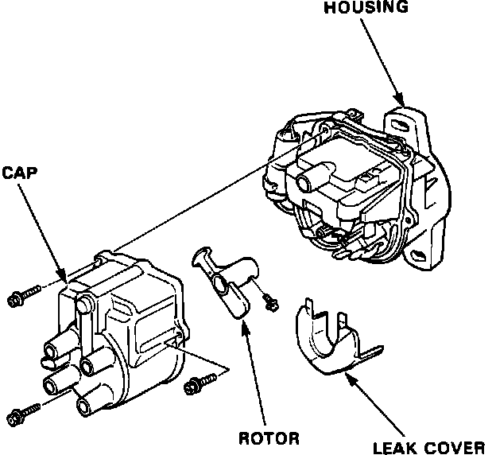
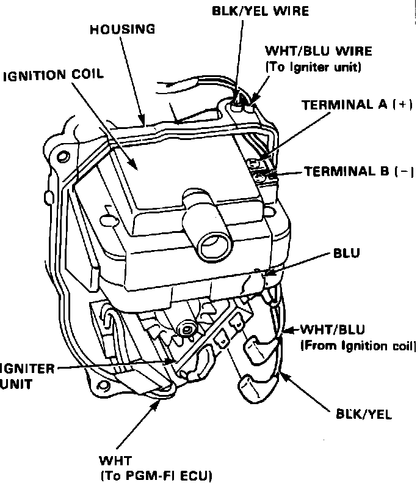

Ignition Control Module: Testing and Inspection
NOTE: - See Computers and Control Systems when self-diagnostic indicator blinks.- The tachometer should operated normally. If the tachometer is not working correctly, this could be an indicator for a bad ignitor unit.
1. Remove the distributor cap.
Igniter Unit Input Test:

2. Remove the rotor and leak cover.
Igniter Unit Input Test:

3. With the ignition switch on, there should be battery voltage between the terminal (+) and body ground.
- If there is battery voltage, go to step 4.
- If there is no voltage, check for:
- An open in the BLK/YEL wire.
- Disconnected terminals.
4. Disconnect the BLK/YEL wire from the igniter unit. There should be battery voltage between the BLK/YEL (+) wire and body ground.
- If there is battery voltage, go to step 5.
- If there is no voltage, check for an open in the BLK/YEL wire between the ignition coil and igniter unit, repair as needed.
5. Disconnect the WHT/BLU wire from the igniter unit. There should be battery voltage between the WHT/BLU (+) wire and body ground.
- If there is battery voltage, go to step 6.
- If there is no voltage, check for:
- Ignition coil test.
- An open in the WHT/BLU wire between the ignition coil and igniter unit, repair as needed.
- Disconnected terminals.
6. Check for continuity between the igniter body and the distributor housing.
7. If all tests are ok, yet the system still fails to work, replace the igniter unit assembly as described in COMPONENT REPLACEMENT AND REPAIR PROCEDURES.